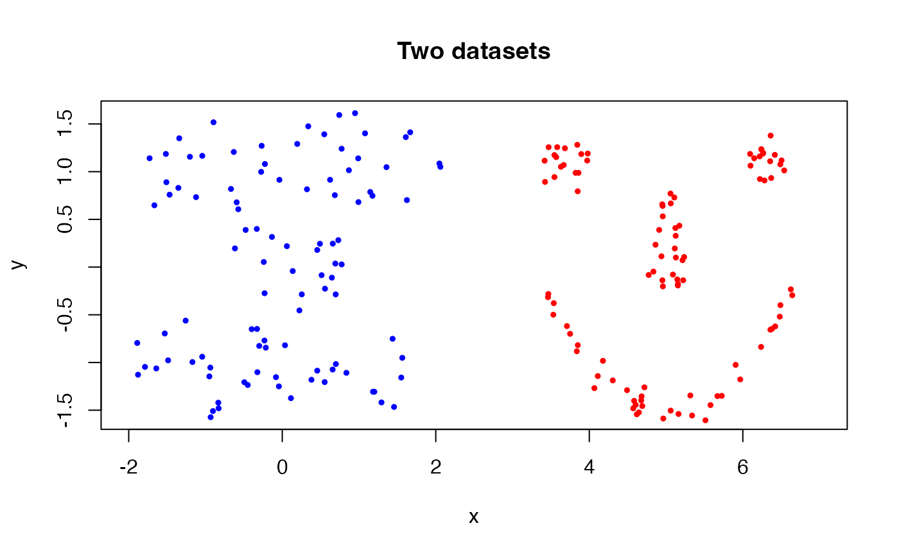
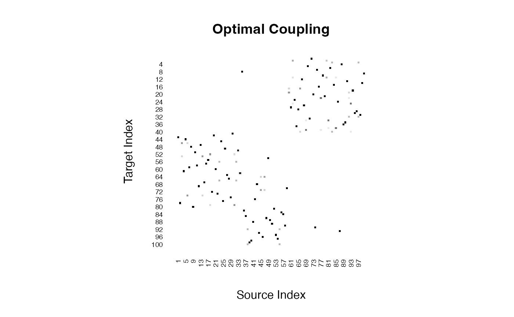
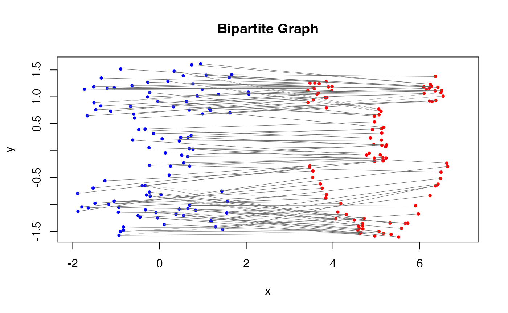

Computing the Wasserstein distance
basic_compute_distance.RmdIntroduction
The Wasserstein distance (Villani 2003) provides a natural and geometrically meaningful way to compare probability distributions. Unlike traditional dissimilarities such as Kullback–Leibler divergence or total variation, it reflects the minimal “cost” of transporting one distribution to another, with respect to an underlying geometry of the sample space.
Formally, the \(p\)-Wasserstein distance between two probability measures \(\mu\) and \(\nu\) on a metric space \((\mathcal{X}, d)\) is defined as:
\[ W_p(\mu, \nu) = \left( \inf_{\gamma \in \Gamma(\mu, \nu)} \int_{\mathcal{X} \times \mathcal{X}} d(x, y)^p \, d\gamma(x, y) \right)^{1/p}, \]
where \(\Gamma(\mu, \nu)\) denotes the set of all couplings (i.e., joint distributions) with marginals \(\mu\) and \(\nu\). This is known as the Kantrovich formulation (Kantorovitch 1958), which differs from the original formulation by Monge (1781) and yet arises the equivalent measure of distance under mild conditions.
Toy example
We use two artificial datasets - cassini and
smiley - from the mlbench package to
demonstrate the usage of our package. Let’s generate small samples of
cardinality \(n=100\). For visual
clarity, two datasets are first normalized to have mean zero and unit
variance across both dimensions, and the second one is translated by +5
in the \(x\)-direction.
# load the library
library(mlbench)
# generate two datasets
data1 = mlbench::mlbench.cassini(n=100)$x
data2 = mlbench::mlbench.smiley(n=100)$x
# normalize the datasets
data1 = as.matrix(scale(data1))
data2 = as.matrix(scale(data2))
# translate the second dataset
data2[,1] = data2[,1] + 5
# plot the datasets
plot(data1, col="blue", pch=19, cex=0.5, main="Two datasets",
xlim=c(-2, 7), xlab="x", ylab="y")
points(data2[,1], data2[,2], col="red", cex=0.5, pch=19)
As shown in the figure, two datasets are quite different in terms of
their shapes. Moreover, the horizontal translation applied to the second
dataset (smiley) makes it more distinct.
How to compute?
Per the formulation of Kantrovich, computing the Wasserstein distance
requires solving a linear programming problem. In
T4transport, the wasserstein() function
achieves that. Let’s see how we can use it. Assume that we consider the
simplest case of order 2.
# call the function
output = wasserstein(data1, data2, p=2)
# print the output
print(paste0("2-wasserstein distance: ",round(output$distance, 4)))## [1] "2-wasserstein distance: 5.0194"The computed Wasserstein distance of order 2 between the two empirical measures is 5.0194. Another benefit of the Kantrovich formulation is that it returns an optimal coupling matrix that matches elements from two sets. The attained coupling matrix \(\hat{\Gamma}\) is given as follows.

Furthermore, this coupling can be shown within the original scatterplot of the two datasets by considering the bipartite graph representation.

In the figure, edges connecting the dots represent the optimal coupling between the two empirical measures. The thickness of the edges is proportional to the amount of mass transported between the points, which can be interpreted as the “flow” in the transportation problem.
Alternative input
It is often a case where we have cross distances between two
empirical measures, rather than the measures themselves. For instance,
the current wasserstein() function only assumes the
Euclidean-valued atoms. In practical scenarios, it is plausible to have
the distances or dissimilarities according to a user-defined metric. The
wassersteinD() function is the choice in such
scenarios.
# compute the cross distance with a helper function
cross_dist <- function(X, Y) {
X2 <- rowSums(X^2)
Y2 <- rowSums(Y^2)
sqrt(outer(X2, Y2, "+") - 2 * tcrossprod(X, Y))
}
cdist = cross_dist(data1, data2)
# call the function
crossed = wassersteinD(cdist, p=2)
# print the output
print(paste0("2-wasserstein distance: ",round(crossed$distance, 4)))## [1] "2-wasserstein distance: 5.0194"Supplying a cross distance matrix also returns the 2-Wasserstein distance value of 5.0194, which is identical to the value we obtained before (5.0194).
Disclaimer
Computing the Wasserstein distance using a linear programming (LP) solver is the classical approach based on the Kantrovich formulation. It is typically included as a core method in any OT libraries. However, this approach does not scale well to large-scale data, since the LP problem involves \(n\times m\) variables and requires \(\mathcal{O}(n^2)\) memory and at least \(\mathcal{O}(n^3)\) time in the worst case. For this reason, we bring alternative algorithms in the package and hope you enjoy exploring them.